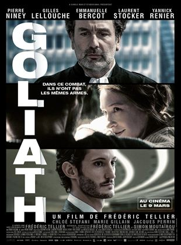

Nommé au Festival de l'Alpe d'Huez : "On sourit pour la photo", avec Pascale Arbillot
Le film Dune présenté au festival de Venise 2021, le film de Denis villeneuve est très attendu.
Au théatre de la Renaissance, la pièce de théatre avec Arditti et Evelyne Bouix, sa femme bat son plein. Ecrite par Salomé Lelouche, c'est une vraie comédie intergénérationnelle.

Goliath, à laffiche depuis quelques semaines avec Gilles Lelouch, Pierre Niney mais aussi Emmanuelle Bercot qui nous avait tant marqué dans "Mon Roi". Ce film qui parle des enjeux écologiques à travers notre société est très aimé du public.